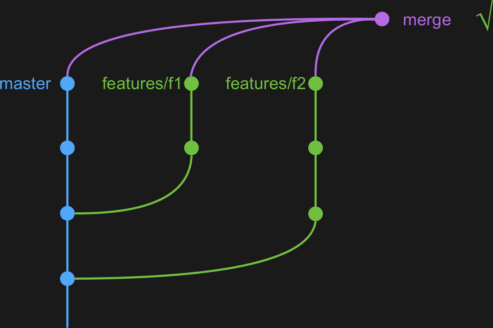

Notre équipe est constitué de 21 développeurs dont 2 ops.
Les développeurs ont des responsabilités devops, telles que la livraison en production, la gestion de la configuration des environnements, le monitoring, etc.
Notre évolution du delivery en transformation vers du continuous delivery
On a besoin de certains éléments préalables
Un code correctement segmenté (avec des parties indépendantes), une bonne couverture de test, des features indépendantes (donc des branches indépendantes) et une chaine de build rapide et automatique (y compris le déploiement).
Normalement, nos 200 tests selenium prendraient 6 heures. Avec un grid selenium classique, on arrive à 1 heure
Avec un grid selenium en RAMFS ? 10 minutes
LesFurets selenium grid :
https://github.com/lesfurets/selenium-lxc
En plus du monitoring technique et métier, on a besoin d'un monitoring UI, LesFurets Zeno pixel :
https://github.com/lesfurets/zeno-pixel
Déploiement blue / green, 0 downtime, avec HAProxy

Trunk based : tout le code est dans le master, nécessite du feature toogle
Feature branching : branches individuelles, difficile de faire de l'intégration continue et de gérer les conflits
Github flow : feature branche avec code review
Continuous merge

Le merge de plusieurs branches avec git :
git merge features/*
...n'existe pas, donc on l'a créé
LesFurets git-octopus :
https://github.com/lesfurets/git-octopus
Mais que se passe-t'il lorsqu'il y a des conflits ?
features/new ne fusionne pas avec features/f2
Lors de conflit, on a plusieurs solutions de différentes natures :
On peut enlever la branche (le plus simple), on peut éviter le conflit (souvent la solution préférée), on peut utiliser git-conflict (livré avec git-octopus) ou on peut fusionner / rebaser les branches en conflit (danger zone).
git-conflict (livré avec git-octopus)
est un gestionnaire de conflit reproductible distribué (cool !)
Les déploiements se font vers plusieurs environnements : personnel (la feature courtante), docker (une feature en isolé, disponible de l'extérieur), developpement (toutes les features), staging / dog fooding (validation fonctionnelle), pre-production (release de demain) et production.
On utilise l'octopus pour l'environnement de staging (octopus-features) et pour l'environnement de preprod (octopus-releases).
En résumé : le continuous delivery est atteignable pour une équipe de toute taille.
Il faut y arriver pas à pas, en commençant par le continuous merge, qu'on peut mettre en place immédiatement sans impact !